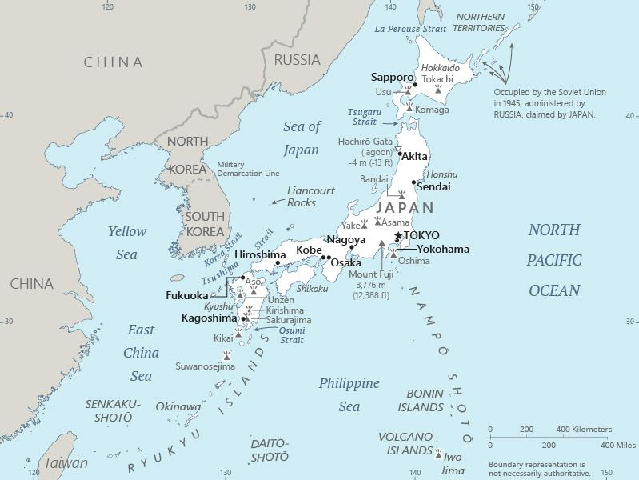

Genel Bilgiler
Japonya, Doğu Asya’da yer alan anayasal monarşi ile yönetilen bir ülkedir. Başkenti Tokyo’dur. Yaklaşık 125 milyon nüfusa sahiptir. Resmî dili Japonca’dır ve para birimi Japon Yeni (JPY)’dir. Japonya, dünyanın önde gelen ekonomik güçlerinden biridir ve teknoloji, sanayi ve kültür alanlarında küresel etkisi büyüktür.
Japonya, Pasifik Okyanusu’nda dört büyük ada (Honshu, Hokkaido, Kyushu ve Shikoku) ile birçok küçük adadan oluşur. Doğuda Pasifik, batıda Japon Denizi, güneyde Filipin Denizi ve kuzeyde Ohotsk Denizi ile çevrilidir. Yüzölçümü yaklaşık 377.975 km²’dir. Ülke dağlık ve volkanik bir yapıya sahiptir; Fuji Dağı en yüksek noktasıdır.
Başkent: Tokyo
Kıta: Asya
Yüzölçümü: 377.975 km²
Nüfus (2025): 125.800.000
Bayrak Anlamı: Japonya bayrağı beyaz zemin üzerinde kırmızı bir dairesel güneş sembolünden oluşur. Beyaz zemin saflığı ve dürüstlüğü, kırmızı güneş ise enerji ve samuray ruhunu simgeler. Bayrak 'Nisshoki' veya 'Hinomaru' adıyla bilinir ve 1870’lerden beri kullanılmaktadır.
Japonya Haritası
Ekonomi
Japonya ekonomisi yüksek gelirli ve gelişmiş bir yapıya sahiptir. Sanayi ve teknoloji sektörleri ekonominin temelini oluşturur. Otomotiv, elektronik, robotik ve gemi inşası öne çıkar. Tarımda pirinç, sebze ve meyve yetiştiriciliği yaygındır. Hizmet sektörü, özellikle finans, turizm ve ticaret alanlarında güçlüdür. Japonya, Ar-Ge ve inovasyon yatırımlarıyla küresel öneme sahiptir.
| Yıl | İhracat (Milyar $) | İthalat (Milyar $) |
|---|---|---|
| 2019 | 677 | 634 |
| 2020 | 680 | 640 |
| 2021 | 740 | 700 |
| 2022 | 760 | 720 |
| 2023 | 770 | 730 |